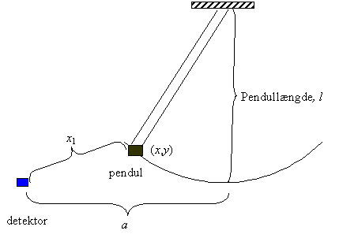
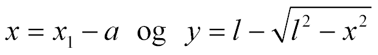
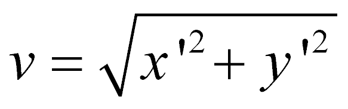

<html>

<head>
<meta http-equiv="Content-Type" content="text/html; charset=windows-1252">
<meta name="GENERATOR" content="Microsoft FrontPage 4.0">
<meta name="ProgId" content="FrontPage.Editor.Document">
<title>Energibevarelse ved pendulbevægelse</title>
</head>

<body>

<h2><font color="#0000FF">Energibevarelse ved pendulbevægelse</font></h2>
<hr>
<p>Til forsøget benyttes en LabPro, bevægelsessonde og et pendul ophængt i
loftet.</p>
<p>&nbsp;
</p>
<p style="margin-left:65.2pt">&nbsp;

</p>
<p>Pendulet i hvile og detektoren er anbragt i samme højde.
Pendulet er ophængt i 4 snore, så det svinger uden slinger frem og tilbage.</p>
<p>Mål afstanden <i>a</i> som et gennemsnit af målinger med
LabPro, når pendulet hænger stille.</p>
<p>Sæt pendulet i bevægelse, og lad LabPro måle afstanden x<sub>1</sub> fra
detektor til pendul. For små udsving fra ligevægt er pendulets position (<i>x</i>,
<i>y</i>)<span style="mso-spacerun: yes">&nbsp;
</span>givet ved:<o:p>
</o:p>
</p>
<blockquote>
  <p><span style="mso-text-raise:-6.0pt"><!--[if gte vml 1]><v:shapetype id="_x0000_t75"
 coordsize="21600,21600" o:spt="75" o:preferrelative="t" path="m@4@5l@4@11@9@11@9@5xe"
 filled="f" stroked="f">
 <v:stroke joinstyle="miter"/>
 <v:formulas>
  <v:f eqn="if lineDrawn pixelLineWidth 0"/>
  <v:f eqn="sum @0 1 0"/>
  <v:f eqn="sum 0 0 @1"/>
  <v:f eqn="prod @2 1 2"/>
  <v:f eqn="prod @3 21600 pixelWidth"/>
  <v:f eqn="prod @3 21600 pixelHeight"/>
  <v:f eqn="sum @0 0 1"/>
  <v:f eqn="prod @6 1 2"/>
  <v:f eqn="prod @7 21600 pixelWidth"/>
  <v:f eqn="sum @8 21600 0"/>
  <v:f eqn="prod @7 21600 pixelHeight"/>
  <v:f eqn="sum @10 21600 0"/>
 </v:formulas>
 <v:path o:extrusionok="f" gradientshapeok="t" o:connecttype="rect"/>
 <o:lock v:ext="edit" aspectratio="t"/>
</v:shapetype><v:shape id="_x0000_i1025" type="#_x0000_t75" style='width:148.8pt;
 height:22.2pt' o:ole="">
 <v:imagedata src="file:///C:/WINDOWS/TEMP/msoclip1/01/clip_image001.wmz"
  o:title=""/>
</v:shape><![endif]--></span>.&nbsp;<o:p>
  </o:p>
  </p>
</blockquote>
<h4>Vis selv dette!</h4>
<p><o:p>Hastigheden <i>v</i> i bevægelsen udregnes som <span style="mso-text-raise:-6.0pt"><!--[if gte vml 1]><v:shape id="_x0000_i1026"
 type="#_x0000_t75" style='width:70.2pt;height:22.2pt' o:ole="">
 <v:imagedata src="file:///C:/WINDOWS/TEMP/msoclip1/01/clip_image003.wmz"
  o:title=""/>
</v:shape><![endif]-->
 </span><!--[if gte mso 9]><xml>
 <o:OLEObject Type="Embed" ProgID="Equation.DSMT4" ShapeID="_x0000_i1026"
  DrawAspect="Content" ObjectID="_1066212519">
 </o:OLEObject>
</xml><![endif]-->
 .</p>
<p>Hastigheden beregnes i programmet ved først at differentiere <i>x</i> og <i>y</i>.
Forklar formlen.</p>
<p>Beregn kinetisk energi, potentiel energi og mekanisk energi
i bevægelsen og undersøg om den mekaniske energi er bevaret. Afbild alle 3
energier i det samme koordinatsystem.</p>
<h4>Vurder forsøget.</h4>

</body>

</html>
